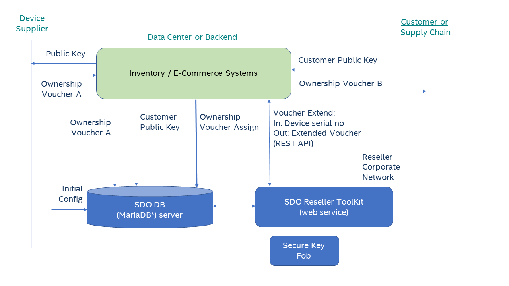
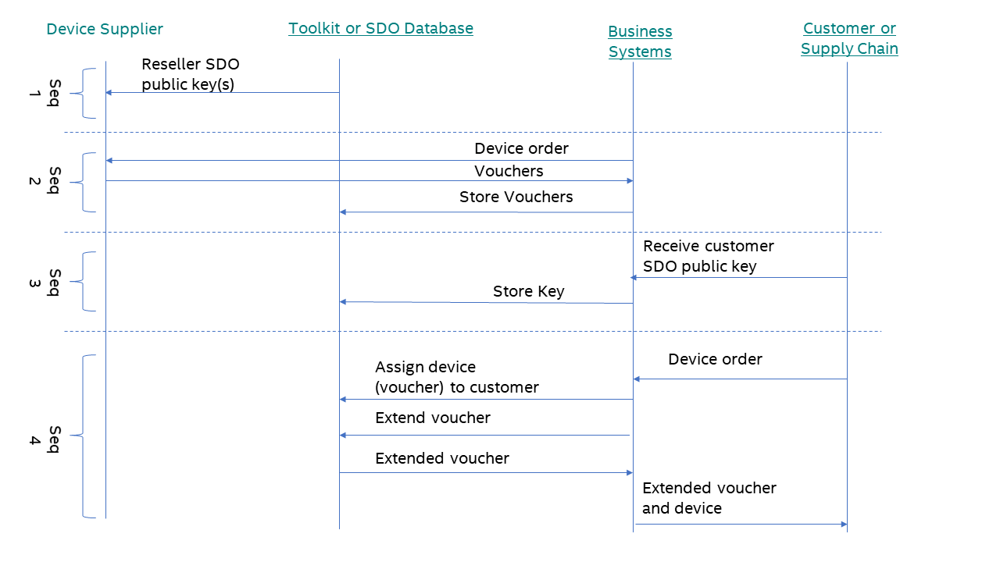
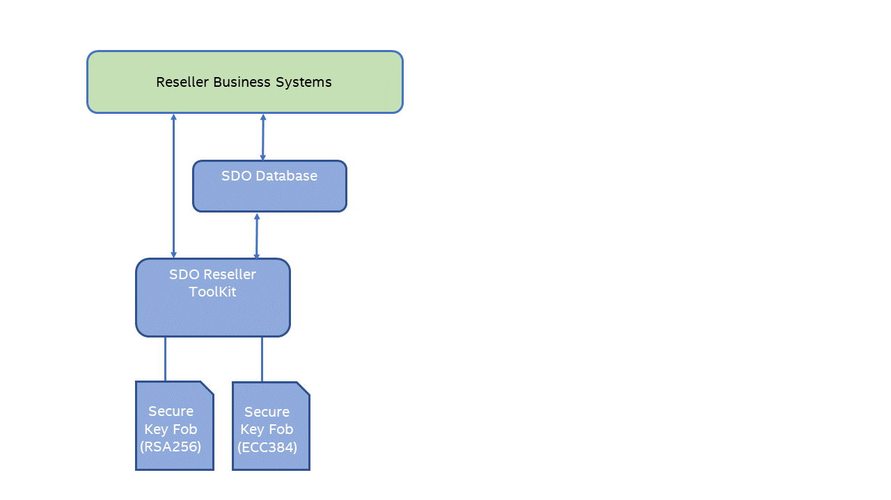

Introduction¶
Secure Device Onboard (SDO) enhances the out-of-the-box setup and provisioning experience for connected IoT devices.
The SDO reseller toolkit addresses the needs of resellers, manufacturers, and others in the supply chain to transfer ownership of SDO devices.
To learn more about SDO, see the Overview.
Terminology¶
Refer to the Secure Device Onboard Reference page.
Related Documents¶
Your role as a supply chain integrator is combined with solutions implemented by manufacturers and device management service providers to enable a complete end-to-end experience. Refer to the Secure Device Onboard Reference page.
Overview¶
As an Secure Device Onboard (SDO)-enabled device progresses through the supply chain, associated with the device are SDO ownership vouchers. Ownership vouchers are electronic documents that are ultimately used by the end recipient of the device to prove ownership. For SDO to function properly, it is important that these vouchers are extended from each entity to the next in the supply chain. As a member of the supply chain, you are responsible for extending ownership vouchers to the next owner when devices are ordered or transferred. Extending ownership vouchers entails the following:
- If you have purchased SDO-enabled devices, receiving a list of ownership vouchers from the previous owner (such as a manufacturer or other reseller/distributor). This can be done via email, a flat file, or an established B2B process to synchronize orders and associated ownership voucher data.
- Importing received ownership vouchers from devices you purchase into the SDO Database.
- Receiving public keys from device purchasers. This is to establish trust of the ownership voucher before it is transmitted or accessed. This receipt operation should be incorporated into your e-commerce flow so public keys are included as part of the device ordering process.
- Extending ownership vouchers based on customer public keys – once a public key from a customer is known and an order is fulfilled, the devices’ associated ownership vouchers are extended to the customer. The resulting vouchers are exported and transmitted to the customer, usually in conjunction with an advanced shipping notice (ASN).
To enable support for SDO, the Secure Device Onboard project provides the following:
- A reseller toolkit to perform ownership voucher extension.
- SDO database to store customer public keys and vouchers received from suppliers (The project provides the definition for all the database artifacts while the reseller is responsible for providing the actual database instance).
The following diagram shows the interfaces between the SDO database, reseller toolkit, business systems, suppliers, and customers.

Evaluation Deployment¶
The evaluation deployment is useful for development, test, and enabling purposes. The evaluation deployment can fully initialize a device to the same extent as the production deployment but does not require any integration with business systems nor the setup of a secure key fob.
Step 1: Prepare Hardware Infrastructure¶
You need to have one machine that can run the reseller toolkit as well as host the Secure Device Onboard (SDO) database. A non-production environment has minimal requirements; the machine can run either the Linux* OS (version 18.04) or Windows* 10 OS.
Step 2: Deploy Database and Toolkit¶
Install the SDO database and toolkit, see Database and Toolkit Installation. It is recommended to choose the key store file option unless there is a specified need to test with a secure key fob.
Production Deployment¶
Step 1: Modify business system processes¶
Your business system processes need to:
-
Manage receipt of ownership vouchers from suppliers and the ownership voucher storage in the SDO Database.
When physical devices are received from your supplier, you should also receive the ownership vouchers. Typically, these are through an electronic communication channel. Each of these vouchers must be inserted in the SDO Database so they can be available for voucher extension (assignment to one of your customers). See Import Ownership Voucher for details.
-
Manage SDO public key(s) from customers, and the public key(s) storage in the SDO database.
SDO requires the customer’s SDO public key. Your customer interactions and processes must be modified as required to support this receipt of their public key and then to import this key into the SDO Database. See Import Customer Public Key.
Whether this key is delivered with each order or done before separately depends on your processes and interaction with your customers.
-
Provide your SDO public key to your suppliers.
During the initial setup of the reseller toolkit, you will create a key pair (if you support a device with multiple cryptography standards, you will have more than one key pair). This key pair needs to be provided to your suppliers. The key pair needs only be supplied once or be supplied with each order. The details would be determined by you and your suppliers.
-
Manage ownership vouchers sent to customers.
After a device is initialized with SDO, an initial ownership voucher is produced and stored in the SDO Database. This voucher must first be “signed” to a customer before sending to the customer.
The ownership voucher management task has the following two steps:
- Assign a voucher (device) to a customer (technically, a customer public key) See Assign Device (Voucher) to Customer.
- Perform voucher extension. The resulting extended voucher can then be sent to the customer.
The following are the implied requirements:
- It is assumed that you already have some way to track which device was shipped with which order. Most likely, this was done with serial numbers. With SDO, there is an additional requirement that you must match voucher(s) with physical devices such that the voucher(s) delivered to the customer are those that correspond to the actual physical devices that are delivered.
- You need to update or modify the existing B2B channel to include an ownership voucher for each physical device delivered to the customer. Typically, these vouchers would be linked to the order in a particular way, but the details will vary for each reseller or distributor.
- If a customer loses one of these vouchers and requires a replacement, then you must re-generate this voucher or retrieve the voucher from the device or order data if you choose to store the extended voucher with the device or order data. The following figure shows a typical usage scenario of various sequences involved in supporting SDO-enabled devices. The order and timing of each sequence may vary with your ordering and inventory management processes. The only firm requirement is that Seq 1 happens before Seq 2, and Seq 2 and 3 happen before Seq 4.

Step 1.1: Device Serial No¶
SDO requires the correct ownership voucher to be delivered with each physical device. Therefore, an identifier that is present on the physical device, for example the serial number, can be used. Scanning an identifier on the physical device allows for the correct voucher to be selected (if an incorrect voucher is delivered, SDO will fail later in the supply chain when run). If, for example, the serial number is already known, the correct physical device can be selected. In practice, the device serial number is used as the identifier. The vouchers you receive from your suppliers will include this “index” value along with each voucher.
Step 1.2: Customer Descriptor¶
A customer descriptor is used when importing customer public keys and assigning a voucher to a customer. This descriptor is a string value that must uniquely identify the customer. It is up to you, the reseller or distributor, to form this value. Duplicates are to be avoided because this value would be used when importing public keys and extending ownership vouchers.
Step 1.3: Deploy for Multiple Key Types¶
If you, as a reseller or distributor, produces both the Rivest–Shamir–Adleman (RSA)- and elliptic-curve cryptography (ECC)-based devices, you will need to support two different key types. However, because of the limitations of the secure key fob (For example, Yubikey*), the deployment of multiple key types requires that multiple secure key fobs, each with one type of key pair, be used. The following figure shows a usage example.

Step 2: Setup Infrastructure¶
You need to acquire and put into place the following:
• A system to host the reseller toolkit and SDO Database
• Secure key fob(s)
The following tables list the hardware infrastructure for Linux*- and Windows*-based reseller toolkits, respectively.
Table 1. Linux* OS-based Reseller Toolkit
| Item | Specification |
|---|---|
| Connectivity | An Ethernet network to connect to the IoT device. |
| Secure Key Fobs | YubiKey* security key (see https://www.yubico.com/products/yubikey-hardware/) |
| Operating System | Ubuntu* OS version 16.x or 18.x |
| Software | · Java* Runtime Environment (JRE) software version 11 Oracle* software (http://www.oracle.com/technetwork/java/javase/downloads/jre8-downloads-2133155.html) or Open JRE (http://openjdk.java.net/install/index.html) · Apache Tomcat* (http://tomcat.apache.org/) software version 8 or later · MariaDB* (http://mariadb.org/) server version 10.4 or later |
Table 2. Windows* OS-based Reseller Toolkit
| Item | Specification |
|---|---|
| Connectivity | An Ethernet network to connect to the IoT device. |
| Secure Key Fobs | YubiKey* security key (see https://www.yubico.com/products/yubikey-hardware/) |
| Operating System | Ubuntu* OS version 16.x or 18.x |
| Software | · Java* Runtime Environment (JRE) software version 11 Oracle software (http://www.oracle.com/technetwork/java/javase/downloads/jre8-downloads-2133155.html) or Open JRE (http://openjdk.java.net/install/index.html) · Apache Tomcat* (http://tomcat.apache.org/) software version 8 or later · MariaDB* (http://mariadb.org/) server version 10.4 or later |
Step 3: Deploy Database and Reseller Toolkit¶
Install the SDO database and toolkit, see Database and Toolkit Installation. Be sure to use the secure key fob option for the key storage.
Step 4: Test¶
Import test voucher and public key. Assign voucher to customer. Invoke voucher extension command.
Database and Toolkit Installation¶
You can either use the Docker* script provided or deploy manually.
Setup: Docker* Script¶
The Docker* script requires a key store file containing the SDO reseller keys. See Supply Chain Tools Key Store Setup Guide for details. For the remaining setup, follow the instructions in the readme file in the SDO Docker* directory.
Setup: Manual¶
- For the following steps, run as root or use sudo.
- Install the MariaDB* server from https://mariadb.org/.
- For each of the following commands, use the ‘root’ user you defined in step 2 where you installed the MariaDB* server, and run each script on the machine where the MariaDB* server is installed. You’ll find the scripts in both the source and binary files of the release.
- Edit the rt_config.sql and mt_config.sql as directed by the comments in each file.
-
Run the rt_create.sql script:
mysql -u <username> -p < rt_create.sql -
Run the rt_config.sql script:
mysql -u <username> -p < rt_config.sql - Create a key store containing the SDO reseller keys. See Supply Chain Tools Key Store Setup Guide for details.
- Setup and deploy the toolkit web service. If this is an evaluation deployment, you have an option to run the web service directly from the command line. If you choose to do this, instructions are provided in the readme file included with the toolkit software. Follow those instructions. You can verify that the toolkit starts up correctly by looking at the output in the window where you ran the toolkit. Installation is then complete, and you can skip the following steps.
An example if running directly:
java -Dspring.datasource.url="jdbc:mariadb://localhost:3307/sdo" -Dspring.datasource.username=sdo_admin -Dspring.datasource.password=sdo -Dsdo.keystore="file:///sdo.p12" -Dsdo.keystore.password=123456 -jar ./reseller-webapp-1.8.war - Install the Apache Tomcat* software from http://tomcat.apache.org/ or equivalent.
- Copy the reseller toolkit war file into the Apache Tomcat* webapps directory (on a Linux* machine this would typically be /var/lib/tomcat8/webapps). Rename the war file to ROOT.war.
- Start the Apache Tomcat service. This will trigger Apache Tomcat to unpack the war file and create individual files in the webapps/ROOT directory.
-
Add the remaining toolkit configuration for the Apache Tomcat* software (see the readme file included with the toolkit software for further details). For Apache Tomcat* version 8 running on the Linux* machine, these settings are located in /var/lib/tomcat/webapps/ROOT/WEB-INF/classes/application.properties. An example is given as follows:
spring.datasource.url=jdbc:mariadb://localhost:3307/sdo?useSSL=false spring.datasource.username=sdo_admin spring.datasource.password=sdo sdo.keystore=file:///var/lib/tomcat8/webapps/ROOT/sdo.p12 sdo.keystore.password=123456Note: The database user and password should match those configured in rt_config.sql.
- datasource.url: be sure to use localhost rather than the IP address.
- sdo.keystore: this is either the pathname to the software key store (jks) or to the public key cryptography standards (PKCS#11) library if using the secure key fob. Be sure to not use quotes around the value.
- sdo.keystore.password: this is the password for the software key store or the pin code of the secure key fob.
-
Start the Apache Tomcat* service.
- Test with the status page: http://
/api/v1/status. If the page does not load, look at the Apache Tomcat* logs to debug any errors.
Setup: Troubleshooting¶
Troubleshoot using the following steps if the toolkit web service does not start correctly:
- Verify that the JDBC* string is correct.
An example is: jdbc:mariadb://localhost:3307/sdo. Be sure mariadb is included, the port is specified as 3307, and the host name is correct.
- Verify that the database user and password are correct.
The user and password should be the same as those defined in rt_config.sql. You may wish to use some third-party database tool to log into the database to test that the user and password are correct.
Usage Scenarios¶
Import Customer Public Key¶
Import the customer public key by calling the rt_add_customer_public_key stored procedure. In a production environment, the import would likely be invoked programmatically. For test, development, or evaluation purposes, run from the command line as follows:
mysql -u <username> -p -h <SDO database server hostname or ip> -P <server port> -e “use sdo; call rt_add_customer_public key('CUST_DIST_12345', '-----BEGIN PUBLIC KEY-----
MIGfMA0GCSqGSIb3DQEBAQUAA4GNADCBiQKBgQCqGKukO1De7zhZj6+H0qtjTkVxwTCpvKe4eCZ0
FPqri0cb2JZfXJ/DgYSF6vUpwmJG8wVQZKjeGcjDOL5UlsuusFncCzWBQ7RKNUSesmQRMSGkVb1/
3j+skZ6UtW+5u09lHNsj6tQ51s1SPrCBkedbNf0Tp0GbMJDyR4e9T04ZZwIDAQAB
-----END PUBLIC KEY-----’)”
Note
Be sure this is the public key PEM and not the certificate PEM. The public key can be extracted from the certificate with the OpenSSL* toolkit:
openssl x509 -pubkey -noout -in <cert file>.pem > <pubkey>.pem
Import Ownership Voucher¶
Import the ownership voucher by calling the rt_add_voucher stored procedure. In a production environment, the import would likely be invoked programmatically. For test, development, or evaluation purposes, run from the command line as follows:
mysql -u <username> -p -h <SDO database server hostname or ip> -P <server port> -e “use sdo; call rt_add_voucher('SN1342599', '{"sz":0,"oh":{"pv":112,"pe":3,"r":[2,[4,{"dn":"localhost","only":"owner","pow":8040,"pr":"http"}],[4,{"dn":"localhost","only":"dev","po":8040,"pr":"http"}]],"g":"UNqKf+WjRi6sFBXybKASPg==","d":"NOT SET","pk":[1,3,[257,"AL6FIK4LAS+7ppX07aoDwJyD0dCjH0730+7sD/PiqEez9/xlwLJqt0M33/eRclchNoHcAIpZFX8tTzu3gVVaJzp73SO2gnTGwhE7SuVr+nzdYh1HksrItnUgx1uVxA3hnUHXy1J7aiZAS4DLUHsWf6gAdVF2VEZpRYupNLo+X6Xt9sZ2Wxt1oy0C/oSG4O8oY9i2wvTSreclafIYKUP8lJIOQt4MZsbcgJWL1Mr1CEBsZ8xwCJiIdmP292WaV8f3zraCAzyjDS0BVrv/0JGfFSjkPzsK8kajtKUPDVTPRLT67M2K1DkQeZLdj1bbVZdXZo7aGW2X0H3JPOuY+CbO0w8=",3,"AQAB"]]},"hmac":[32,108,"PB+PtWcCFRa6nJcGQM3P4JJUUR/hBmWobFBGxjyBdRs="],"en":[]}')”
Assign Device (Voucher) to Customer¶
Assign the device (voucher) by calling the rt_assign_device_to_customer stored procedure. In a production environment, the assignment would likely be invoked programmatically. For test, development, or evaluation purposes, run from the command line as follows:
mysql -u <username> -p -h <SDO database server hostname or ip> -P <server port> -e “use sdo; call rt_assign_device_to_customer(‘SN12345678’, ’CUST_DIST_12345’)”
Extend Ownership Voucher¶
Ownership voucher is extended through the REST API. In a production environment, the extension would be done programmatically. For test purposes, you can use curl to invoke the extension:
curl -X GET http://<reseller toolkit ip>:<port>/api/v1/vouchers/<device serial no>
The result will be the extended voucher.